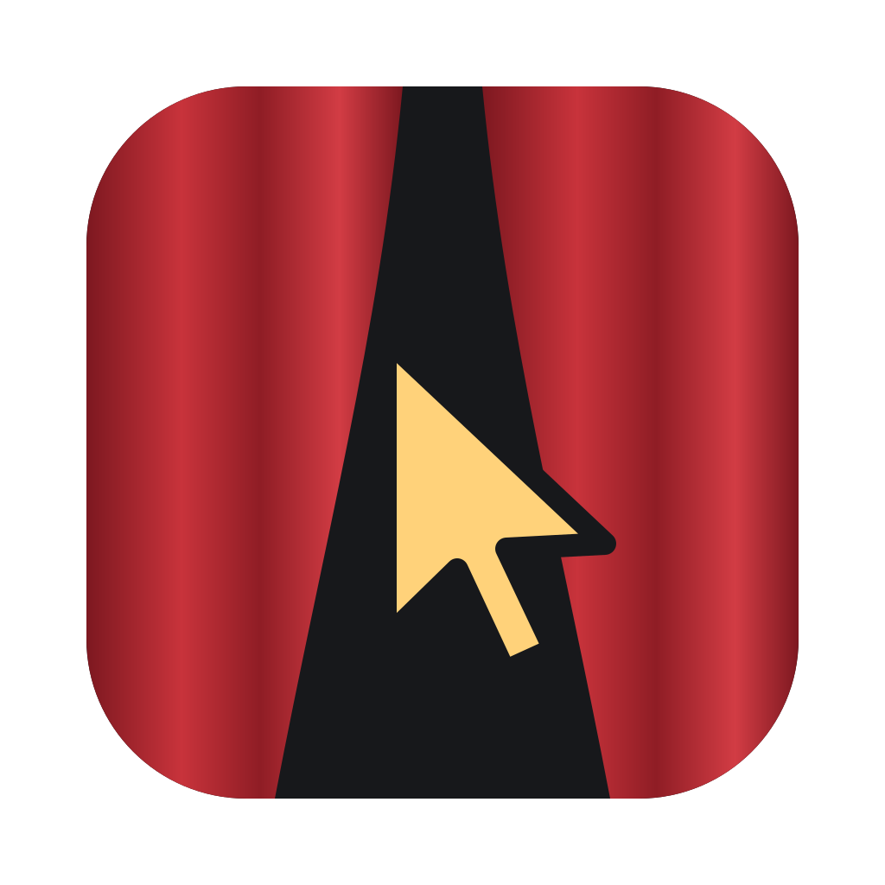

A project is a folder, usually a repository: Kulisa keeps its profiles, workspaces and agents.
A profile is a separate browser profile, as in Chrome: its own cookies, storage, tabs and sign-ins. Sign in by hand in its pane; the agent in the terminal then uses it.
The agent reads this to choose the right profile for a task: who this is in your app, its role, what it can do. You can skip it: the agent will ask you when it needs to know, and save your answer here.
A fork of main for one task: its own branch and folder next to the project, its own agent, and copies of main's profiles, signed in. The app under test runs on its own ports there.
The agent works in this workspace's terminal: it writes the code and uses the profiles. If it is not on this computer yet, Kulisa installs it with its maker's installer. On its first start it asks you to sign in.
The agents Kulisa can run in a workspace's terminal. Install one here; choose it for a workspace when you make one, or with Change agent… in the terminal's menu.